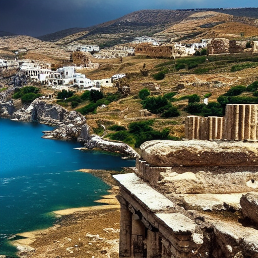
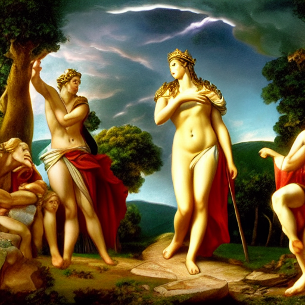
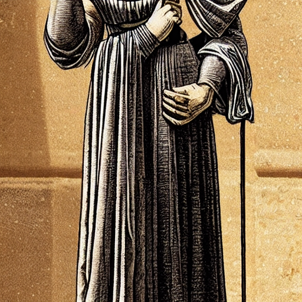
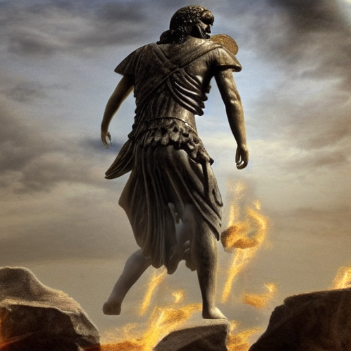
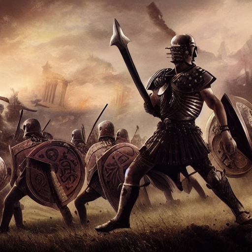
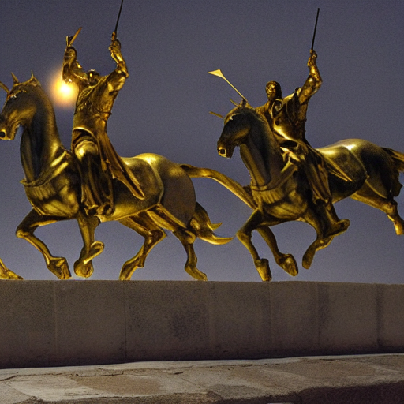
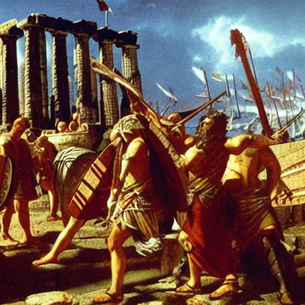

In the sweltering heat of the Greek summer, the city-states of Greece and Troy teetered on the precipice of war. King Priam of Troy, a just and fair ruler, had long maintained a fragile peace with the Greeks, his people living in the shadow of the looming hills. But beneath the surface, a maelstrom of emotions churned, like the Aegean Sea in a storm. The air was heavy with the scent of blooming laurel and the soft rustle of olive leaves, as if the trees themselves whispered warnings of the impending doom.

On Mount Ida, the gods gathered to witness the judgement of Paris, their whispers weaving a tapestry of fate. Aphrodite, goddess of love, presented the young prince with three golden apples, each inscribed with a promise that seemed too divine to be true. Zeus, king of the gods, decreed that the apple chosen by Paris would reveal the true nature of his heart's desire, but the god's own heart remained shrouded in mystery. As Paris picked the apple inscribed with 'Helen', a shiver ran through the gods, for in that moment, the course of history was forever altered.

In secret, Paris and Helen's love blossomed, a flame that burned brighter with each passing day. But their happiness was short-lived, for the whispers of their affair soon reached King Menelaus, Helen's husband, and the Greeks were galvanized into action. As Paris and Helen exchanged vows of love, the wind whispers a different tale, one of deceit and betrayal. Meanwhile, in Troy, Priam sensed the darkness gathering on the horizon, a feeling that gnawed at his heart like a thief in the night. The gods, too, felt the tremors of war, their silence a heavy weight.

As the Greeks set sail for Troy, their ships cut through the Aegean like a scimitar, leaving a trail of sea foam and shattered dreams in their wake. The city of Troy, once a beacon of hope and refuge, now loomed on the horizon, a monolith of defiance and determination. Agamemnon, the king of kings, stood tall at the forefront of the legion, his eyes burning with a fire that would not be quenched. Achilles, the greatest warrior of the Greeks, stood beside him, his presence a harbinger of doom, his name whispered in awe and terror.

The day of reckoning arrived, and the Greeks clashed with the Trojans on the blood-soaked plains of Troy. Achilles and Hector, the greatest warriors of the two armies, engaged in a duel that would decide the fate of the city. The clash of steel on steel echoed through the valleys, as the gods watched from above, their allegiances torn asunder. Paris, the prince of Troy, watched in horror as his brother, Hector, fell to the ground, his life slipping away like grains of sand in an hourglass. The city trembled, and the gods wept.

Under the guise of a gift, the Greeks presented the Trojans with a magnificent golden horse, its surface glinting like the sun on the Aegean. As the Trojans welcomed the offering, the Greeks hid within its belly, their hearts racing with anticipation. Odysseus, the cunning king, had devised a plan to infiltrate the city, to bring about its downfall. Meanwhile, Hector's brother, Aeneas, sensed the treachery brewing, but the gods remained silent, their fate inextricably linked to the outcome. The golden horse, a vessel of deceit, stood as a harbinger of Troy's downfall.
As night descended upon Troy, the Greeks emerged from the golden horse, their hearts ablaze with fury. Achilles, fueled by rage and a sense of honor, charged into battle, his legendary spear flashing in the moonlight. The city walls trembled, the gates splintering like brittle wood as the Greeks poured inside. Priam's sons, Aeneas and Deiphobus, fought valiantly, but their efforts were for naught against the tidal wave of Greek warriors. Troy's fate was sealed, its people fleeing in terror, as the gods watched with a mixture of awe and sorrow, their prophecies fulfilled.

In the aftermath, the Greeks laid waste to the city, pillaging its riches and claiming its glory. As the dust settled, the survivors of Troy began their arduous journey to a new home, guided by the prophecy of a young Aeneas. Meanwhile, the Greeks, forever changed by their experience, set sail for home, their hearts heavy with the memories of a war that had claimed so many lives. Priam, the king of Troy, lay on his deathbed, his final breath a whispered apology to the gods, for the fate that had befallen his beloved city.
